Tẩy Trang Dành Cho Da Thường
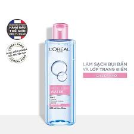
L'Oreal Micellar Water 3-in-1 (Hồng)
Dành cho da nhạy cảm, giúp làm sạch, giữ ẩm, không gây khô căng.
Phù hợp: Da thường
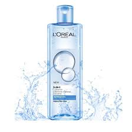
L'Oreal Micellar Water (Xanh dương nhạt)
Loại bỏ hiệu quả lớp makeup lâu trôi, giúp làm sạch sâu và tươi mát da.
Phù hợp: Da thường
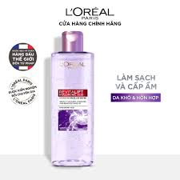
L'Oreal Micellar Water (Tím)
Chứa thành phần chống oxy hóa giúp làm dịu, thích hợp với da dễ kích ứng.
Phù hợp: Da thường
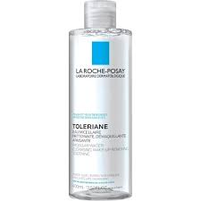
La Roche-Posay Micellar Water Ultra (Trắng)
Công nghệ micelle độc quyền, làm sạch và giữ độ ẩm tự nhiên cho da.
Phù hợp: Da thường
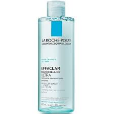
La Roche-Posay Micellar Water Ultra (Xanh)
Chứa kẽm PCA giúp làm sạch sâu và kiểm soát bã nhờn nhẹ nhàng.
Phù hợp: Da thường
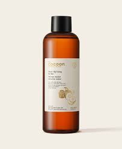
Cocoon Bí Đao Micellar Water
Chiết xuất bí đao & rau má giúp kháng khuẩn, làm dịu và sạch sâu.
Phù hợp: Da thường
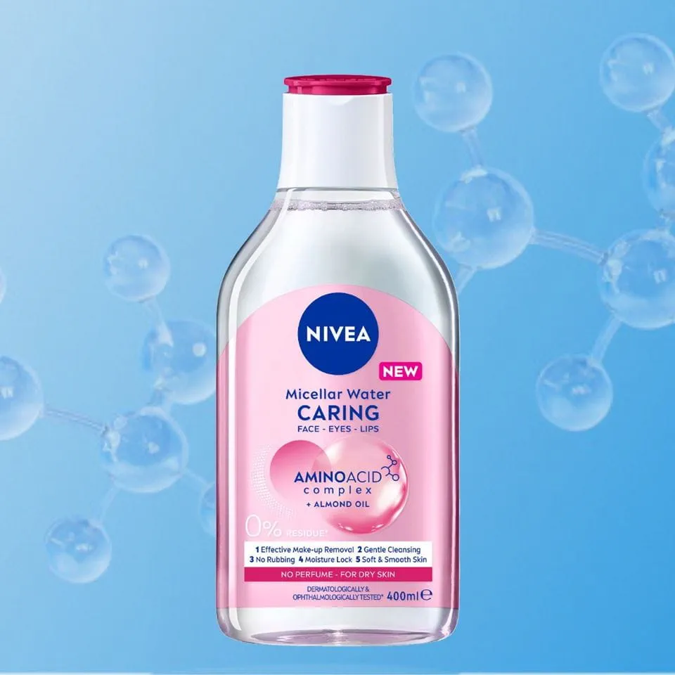
Nivea MicellAIR (Hồng)
Không cồn, dịu nhẹ, dưỡng ẩm da sau tẩy trang với chiết xuất hoa anh đào.
Phù hợp: Da thường
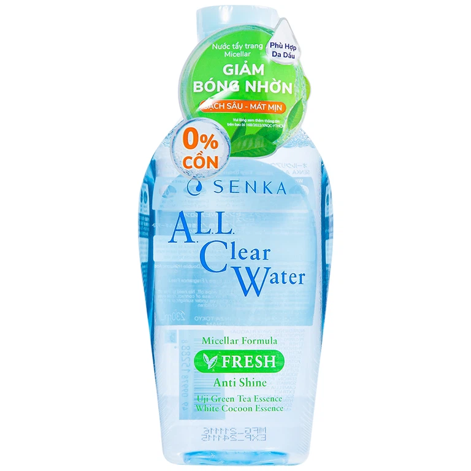
Senka All Clear Water Micellar Formula
Chiết xuất trà xanh và tơ tằm trắng, làm sạch bụi bẩn và giữ ẩm da.
Phù hợp: Da thường
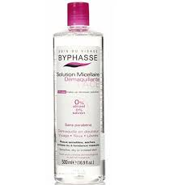
Byphasse Solution Micellaire
Giá mềm, dung tích lớn, làm sạch nhẹ dịu, không gây khô da.
Phù hợp: Da thường
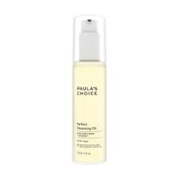
Paula's Choice Gentle Touch Makeup Remover
Làm sạch vùng mắt và môi, không gây kích ứng, dưỡng ẩm nhẹ.
Phù hợp: Da thường
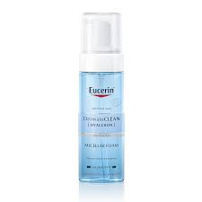
Eucerin DermatoCLEAN Micellar
Không chứa hương liệu, làm sạch hiệu quả, duy trì hàng rào ẩm da.
Phù hợp: Da thường
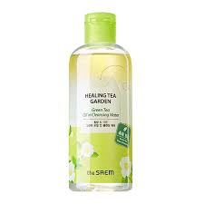
Healing Tea Garden Cleansing Water
Chiết xuất trà xanh hoặc hoa nhài, làm dịu và làm sạch nhẹ nhàng.
Phù hợp: Da thường
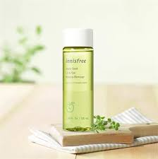
Innisfree Green Tea Cleansing Foam
Tạo bọt làm sạch sâu, chứa chiết xuất trà xanh giúp chống oxy hóa nhẹ.
Phù hợp: Da thường
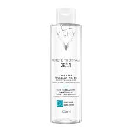
Vichy Pureté Thermale Micellar Water
Giàu khoáng chất từ nước suối Vichy, làm sạch và tăng cường sức sống da.
Phù hợp: Da thường
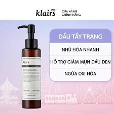
Klairs Gentle Black Deep Cleansing Oil
Dầu tẩy trang từ đậu đen, hạt mè, giúp làm sạch cặn trang điểm mà không bít lỗ chân lông.
Phù hợp: Da thường